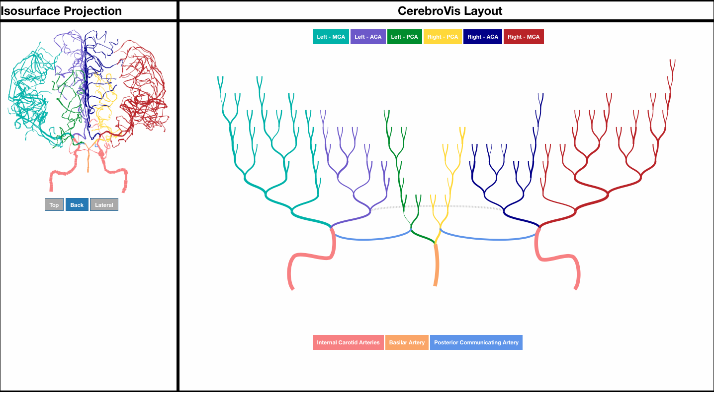
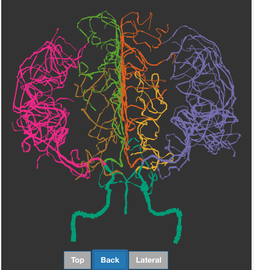
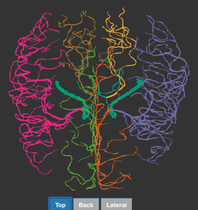
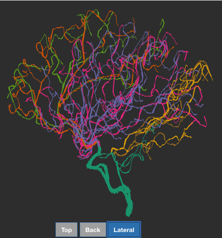
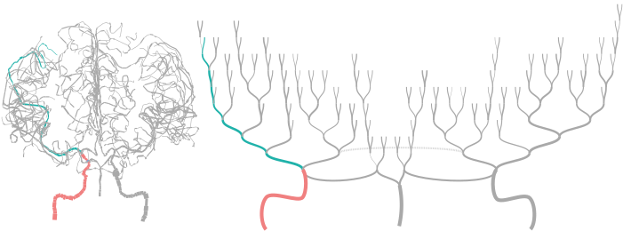
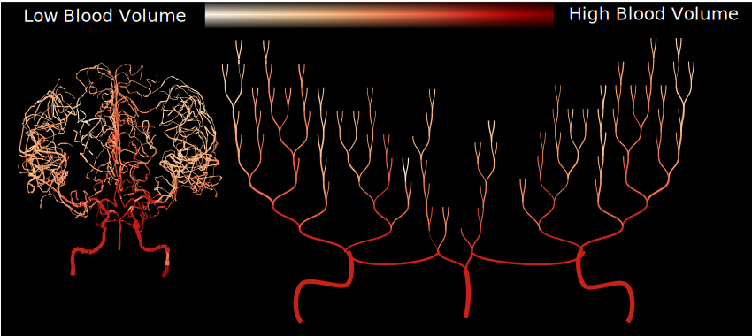

Dashboard
Dashboard is split up in two views. Isosurface projection of the brain on the right and dendrogram view on the right. Dendrogram view is an abstract representation of the arteries and provides a visually less cluttered and more understandable branching within the brain arteries.

Categorical color scale
Categorical color code is used to highlight branches which supply blood to different parts of the brain. However, additional use of categorical color scale is for readability of the dendrogram. You can look at colors on the branches of dendrogram and look at corresponding color on the brain view.
Isosurface Projection
There are 3 views to look at 3D brain projection. You can switch the brain view using the button placed just beneath the brain.
- Back
- Top
- Lateral



Interactivity
We use a linked view approach between dendrogram and the isosurface projection. You can click on the arteries and the corresponding artery in the brain is highlighted.

Sample Use Case: Stroke Detection
We use a faint orange to dark red gradient color scale. Blood flow can be switched on using the checkbox at top right corner of the dendrogram view.
A stroke can be identified by a sudden change in the gradient color scale.
